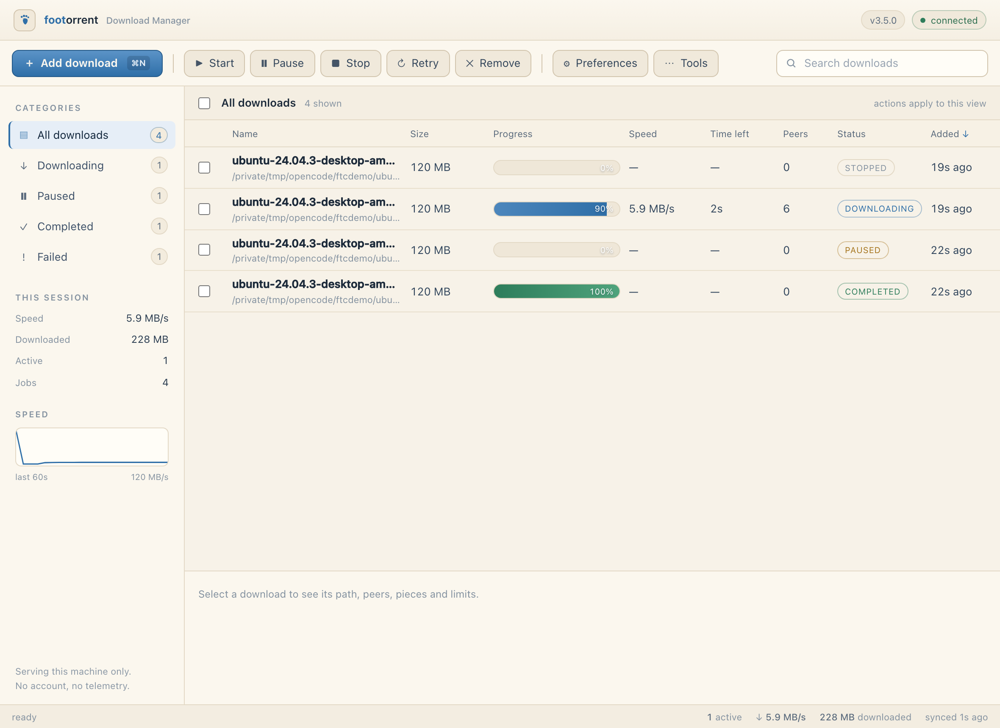
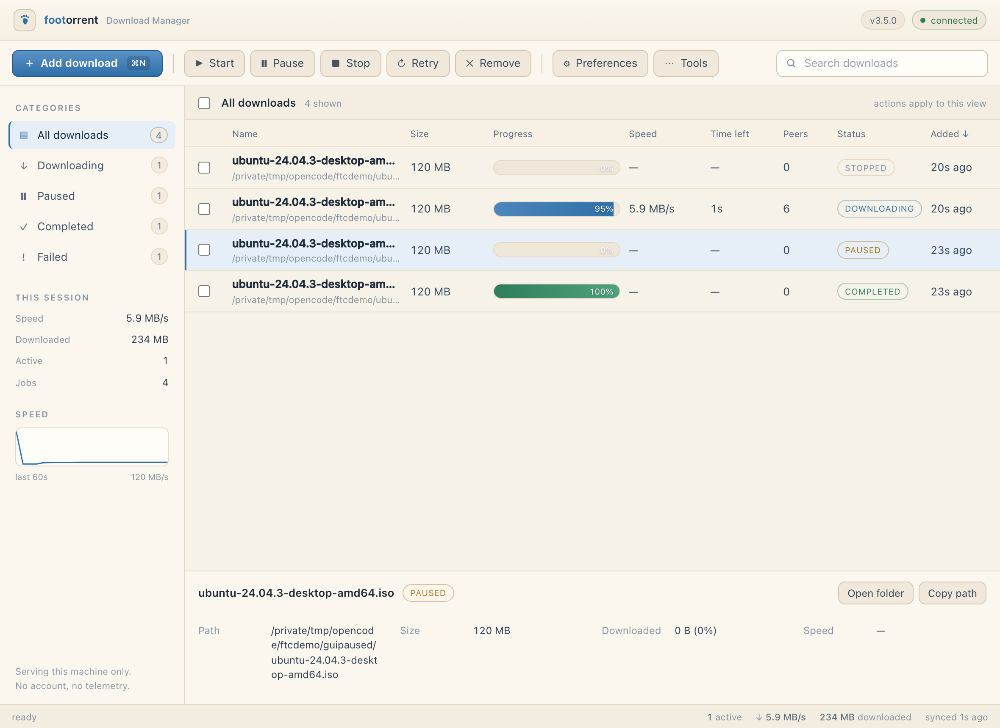
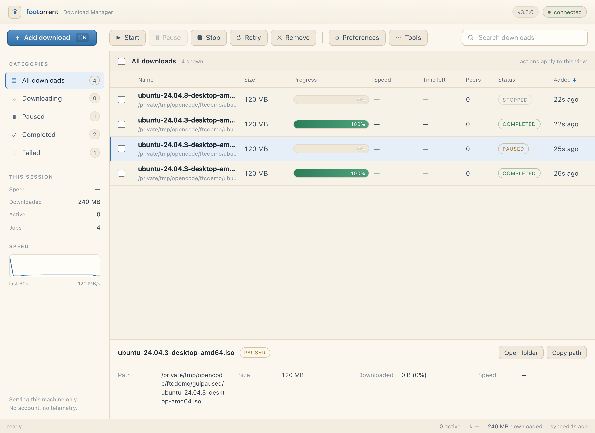
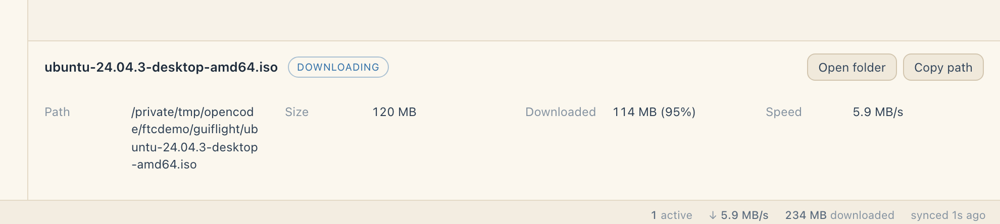
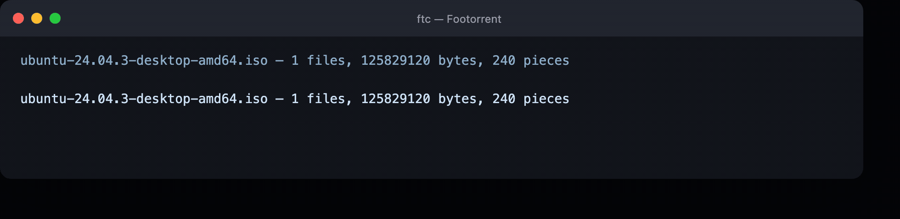
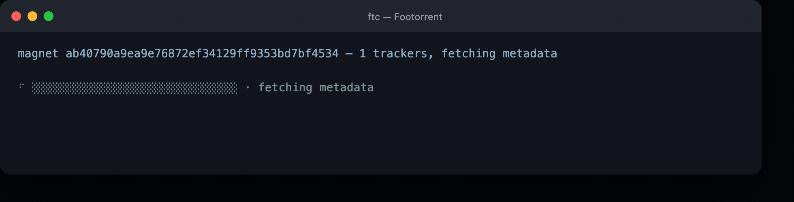

Footorrent (ftc) is a BitTorrent client compiled to one static binary.
No libtorrent, no Electron, no runtime to install — the wire protocol,
trackers, DHT and seeding are written from scratch in Rust.
curl -fsSL https://raw.githubusercontent.com/cyberd4ch/footorrent/main/install.sh | sh

ftc serve — the page the macOS app opens



One archive per platform, straight from the release. No account, no sign-up. Extract it and run — the binary inside keeps its executable bit, which a bare download never does (that is the file that opens as 3 MB of text).
curl -LO …/releases/latest/download/SHA256SUMS && shasum -a 256 -c SHA256SUMS --ignore-missing
ftc — plus the footorrent alias — on your PATH.~/Downloads.%LOCALAPPDATA%\Programs\ftc to
your user PATH. SmartScreen may warn on an unsigned binary: "More info" → "Run anyway".~/.local/bin without sudo when
/usr/local/bin is not writable.No libtorrent. No shortcuts. Every protocol byte is this repository's own code — which is why the whole client fits in one binary.
npm install, no
runtime to keep updated, no 90 MB app bundle to unpack on first launch.info dictionary over BEP 9/10, and verifies it against the info hash.ftc gui and the same binary serves a local page — add a
magnet, watch progress, pause or cancel. No Electron, no second download, and the
CLI is still one argument away.--seed 60 serves verified pieces only. The Bitfield is built from
what actually checks out — a half-downloaded folder never claims it has the rest.info dictionary it has just
verified (BEP 9/10), so a swarm of Footorrent clients can bootstrap from the seed alone..., absolute paths or separators are
rejected; peer frames are capped at 2 MiB before allocation.The CLI paints one bar and repaints it in place — same blues, same numbers, same engine counters the table reads. Captured here from a real run: 120 MB over loopback, capped at 6 MB/s, so the clock on it is honest.

Blue while it runs, green when the pieces verify, red when it gives
up, amber when you type p + Enter to pause — the same keys resume. Piped, or with
NO_COLOR set, the same counters print as plain lines that never repaint.

A bare magnet: the bar stays empty until the info
dictionary has arrived and verified, and the peer count only moves when the swarm answers. No
bytes are written in this phase.